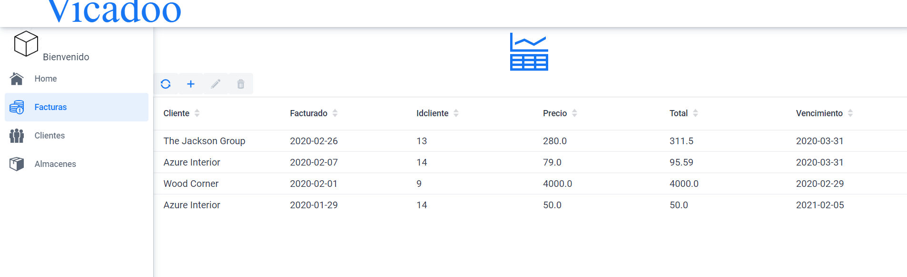

Informacion de la factura
Una vez hayamos decidido sobre que factura deseamos ver los detalles simplemente debemos seleccionarla y pulsar en el boton de los detalles. En estos detalles se nos mostraran los datos de forma mas concreta de la factura y de los productos que esta misma contiene.
